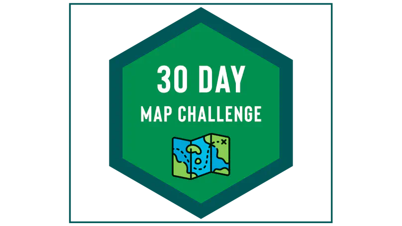
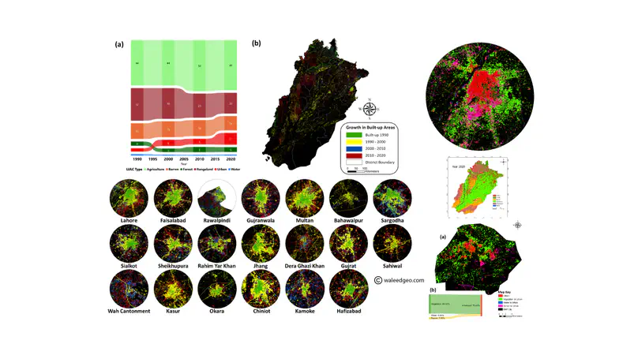
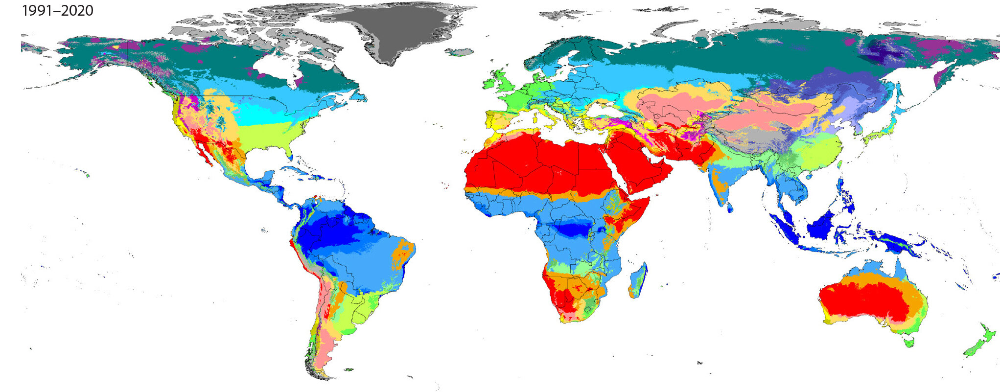
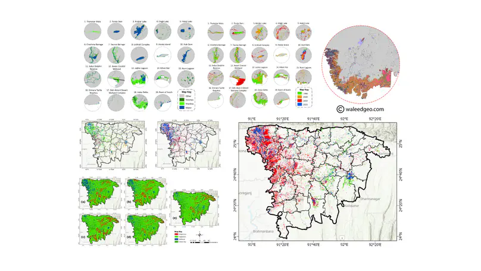
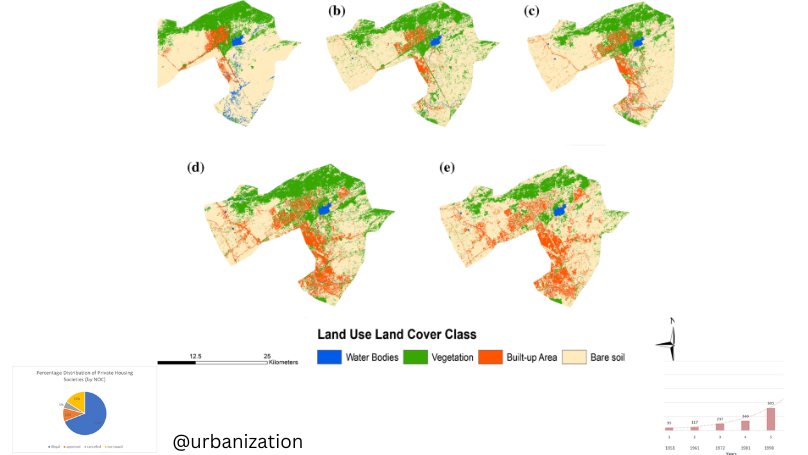
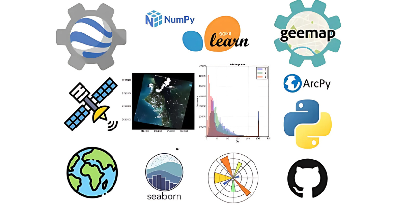

GEE
Active
GEE
Active
Google Earth Engine Projects
GEE scripts for NDVI, flood mapping, LULC classification, and spectral indices.
 GeoAI
Active
GeoAI
Active
Machine Learning & AI for GIS
GeoAI workflows using Random Forest, SVM, and CNN for LULC classification and object detection.
 Visualization
Completed
Visualization
Completed
30 Day Python DataViz Challenge
30 geospatial visualizations: animated maps, 3D terrain, and interactive web maps.
 Geospatial
Active
Geospatial
Active
GIS & Spatial Analysis Toolkit
Comprehensive toolkit for spatial statistics, change detection, and raster processing.

Cartography ActiveCartographic Map Collection
Professional cartographic designs including thematic, choropleth, and 3D terrain maps.
 Flood Mapping
Completed
Flood Mapping
Completed
Pakistan Floods 2022 — SAR Flood Mapping
Mapped flood extent using Sentinel-1 SAR imagery with change detection methods.

LULC CompletedLULC Change Detection & Classification
Multi-temporal LULC classification using Random Forest achieving 92% accuracy.

Climate In ProgressClimate Change Monitoring — Rawal Dam
Analyzing hydrological changes using MODIS NDWI time-series and climate variables.

Wetlands CompletedWetlands Mapping & Nature Resource Analysis
Monitoring wetland extent and health using Sentinel-2 spectral indices.

Urbanization CompletedUrban Growth Monitoring & Heat Island Analysis
20-year urban expansion analysis using Landsat with LST and UHI intensity.

Open Source ActiveOpen Source GIS & Remote Sensing Tools
Python utilities and GEE scripts for the geospatial community with interactive dashboards.